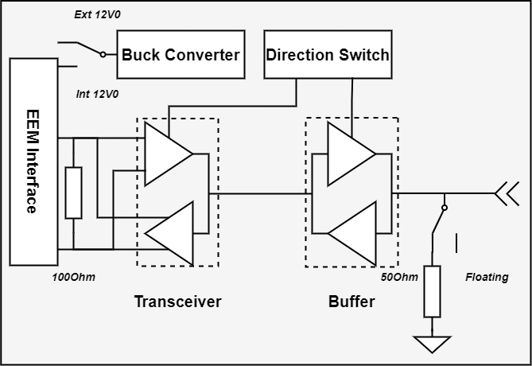
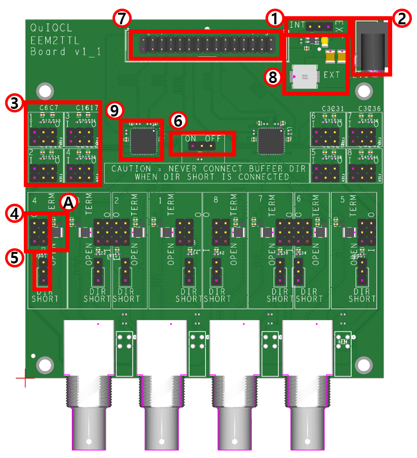
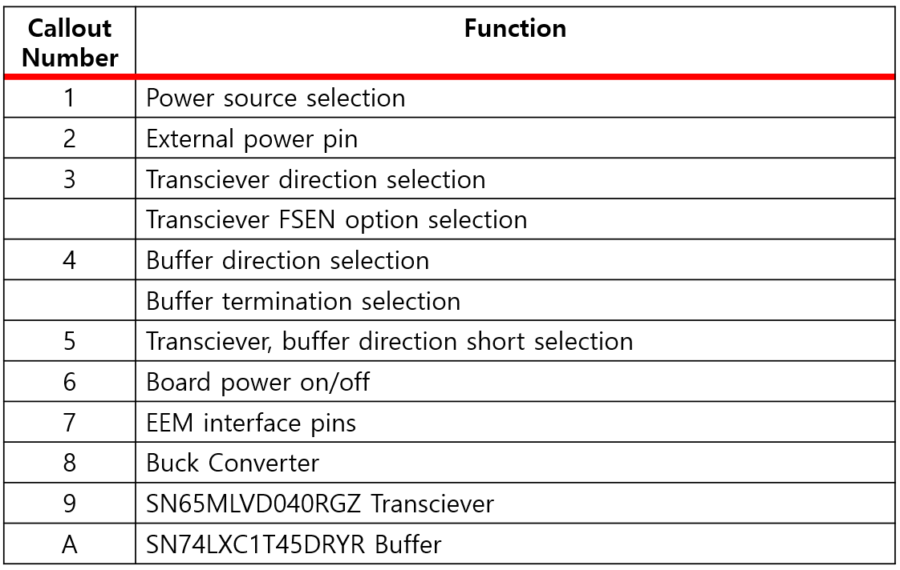

Bidirectional LVDS to TTL

Overview
The daughter board converts LVTTL to LVDS signals, with configurable signal direction and 50-Ohm termination using jumpers. Power can be supplied either through the EEM connector or an external power source. A 12V to 3.3V DC-DC converter circuit provides the 3.3V power supply. A buffer is used to drive a 50-Ohm impedance, ensuring the output voltage exceeds 2.0V, which meets the VIH requirements for LVTTL logic levels. The designed PCB serves as a Lolenc TTL driver, capable of controlling electronic devices with a timing resolution of 8 ns.
Board Configuration
 Jumper Configuration
1:Power Source Selection
When the power source selection jumper is connected to the `INT` pin, the 12V power is supplied from the EEM interface. Conversely, if connected to the `EXT` pin, the 12V power is supplied from an external power source pin.
3:Transciever Option Selection
Each transceiver has four I/Os, and the direction of each I/O can be selected individually. Each I/O option is configured with a dedicated jumper, marked with an index number on the board. The upper jumper, labeled `I` and `O`, controls the transceiver's direction. When connected to `I`, it receives signals from TTL to EEM, and when set to `O`, it transmits signals from EEM to TTL. The lower jumper selects the FSEN option for M-LVDS, which stabilizes output even when the input LVDS signal is close to the threshold level and oscillating slightly.
4:Buffer Option Selection
A buffer chip is positioned directly behind the BNC port to increase output signal current. The direction of each signal can be selected by adjusting jumpers. Connecting the jumper to `I` routes the input signal from the BNC to the transceiver, while connecting it to `O` sends the signal from the transceiver to the BNC port. The `OPEN` and `TERM` jumper is used to control the BNC’s 50-ohm termination; connecting it to `OPEN` leaves the BNC open, while connecting it to `TERM` provides a 50-ohm termination on the board. This setup helps reduce signal reflection when receiving long-distance input signals.
5:Direction Short Option Selection
The transceiver and buffer directions must be matched. Each direction can be selected individually on the board, mainly for debugging purposes, but this feature is typically not used. Connecting the jumper to `DIR SHORT` synchronizes the transceiver and buffer directions. When using this setting, never connect both the transceiver and buffer direction jumpers simultaneously, as this could short 3.3V and 0V. It is recommended to leave the I/O direction jumper on the buffer open and control the direction using only the transceiver direction jumper.
6:On/Off Switch
When jumper is connected to `ON`, board is turned on, and vice versa.